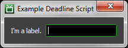
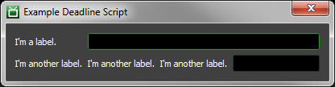
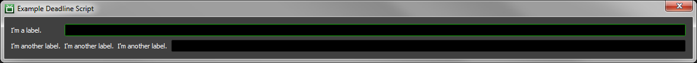
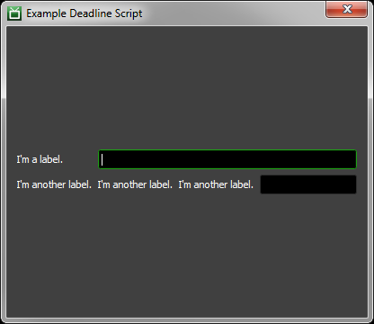
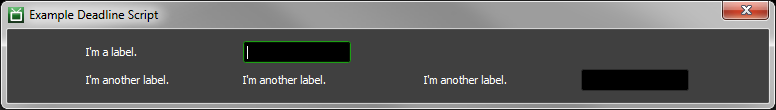
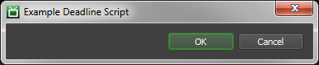
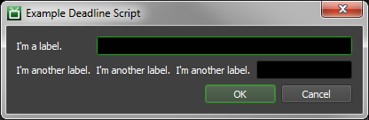

Monitor Scripts¶
Overview¶
There are several different types of Monitor scripts available. While the large majority of the ones shipping with Deadline are Submission Scripts used to submit new Jobs to the farm, the Monitor has the capability of running utility scripts in the context of specific Jobs, Tasks, Workers, Limits, or even Reports.
Below, we go into more detail for each of the different types of Scripts, and how to create your own.
Scripting Reference¶
As with all other Deadline scripts, Monitor scripts use Python, which is additionally supported using Python for .NET. This means that in addition to typical cPython modules, Python for .NET allows your scripts to make use of .NET Libraries, and Deadline’s own internal functions. For UI construction, PyQt5 is used. Deadline’s ScriptControl UI class inherits from QWidget. Both ScriptDialog and DeadlineScriptDialog extend this ScriptControl class, allowing you to use PyQt5 interchangeably within Deadline’s Python when creating UI based scripts.
The full Deadline Scripting Reference can be downloaded in CHM or PDF format from the Deadline Downloads page.
Particular functions of note relevant to Monitor Scripting can be found in the aforementioned Scripting Reference, under the following sections:
Deadline.Scripting.MonitorUtils
Deadline.Scripting.JobUtils
Deadline.Scripting.SlaveUtils
It can also be very helpful when developing your own Monitor Script to take a look at how our built-in Monitor Scripts of that type are structured.
General Script Template¶
We follow a fairly specific template when making any new built-in Monitor scripts. The template is loosely as follows:
Define your __main__ function: This is the function that Deadline will call when invoking your script. This is mandatory, and your script will generate an error if it isn’t done.
def __main__(*args): #Replace "pass" passBuild the submission UI: Typically done in the __main__ function by creating a ScriptDialog object, and adding controls to it. Each control’s name must be unique, so that each control can be identified properly. You can also set the dialog’s size (if not using a grid layout), the row and column (if using a grid layout), title, and a few other settings. For more details, see the ScriptDialog and ScriptControl sections of the Reference Manual. For an example on how to use the grid layout see the Grid Layout Example Script documentation.
Define and Load Sticky Settings: Sticky settings are settings that persist after the dialog has been closed. They are defined by creating a string array that contains the names of the controls for which you want the settings to persist. After defining them, you can load them by calling the ‘LoadSettings’ function of your ScriptDialog.
Show the Dialog: The last thing you should do in your __main__ function is to show your ScriptDialog, by using its ‘ShowDialog’ function.
Define Your Functions: Specify any functions that may be used by your script. These could just be helper functions, or event handlers that do stuff when UI values are modified.
Note that you don’t necessarily need to follow this template, but the closer you stick to it, the more examples you’ll have to draw on.
Monitor Scripts¶
There are many different types of scripts you can write for the Monitor, which are listed below. It is recommended that these scripts be created in the ‘custom’ folder in the Repository to avoid issues when upgrading your Repository in the future. See the Scripting Overview documentation for more information on the ‘custom’ folder in the Repository and how it’s used.
When a Monitor script is executed the log will show where the script is being loaded from.
Submission Scripts¶
Submission Scripts are used to create custom Submission dialogs, and ultimately submit new Jobs to Deadline. They are located in the ‘Submit’ menu of the Monitor’s main menu bar, as well as the ‘Submit’ menu in the the Launcher. Creating your own custom Submission dialog is quite simple, and the process is described below.
To create new submission scripts, simply navigate to the ‘custom\scripts\Submission’ folder in your Repository. Then, create a new Python file named ‘MySubmissionScript.py’, where ‘MySubmissionScript’ is the name of your new script.
Once created, you can follow the template outlined above in the General Script Template section to build up your script.
General Scripts¶
General scripts are used to perform any sort of custom action by selecting them from the Monitor’s (or Launcher’s) ‘Scripts’ menu. Under the hood, there technically isn’t anything different between General and Submission scripts. The only real difference is that they show up under different menus, which is just to help keep scripts semantically separated.
To create new General scripts, simply navigate to the ‘custom\scripts\General’ folder in your Repository. Then, create a new Python file named ‘MyGeneralScript.py’, where ‘MyGeneralScript’ is the name of your new script.
Once created, you can follow the template outlined above in the General Script Template section to build up your script.
Job Scripts¶
Job Scripts are typically used to modify or to perform actions on a selected Job in the Monitor. They can be accessed by right-clicking an existing Job in the Job Panel, under the ‘Scripts’ sub-menu.
To create new Job scripts, simply navigate to the ‘custom\scripts\Jobs’ folder in your Repository. Then, create a new Python file named ‘MyJobScript.py’, where ‘MyJobScript’ is the name of your new script.
Once created, you can follow the template outlined above in the General Script Template section to build up your script.
Task Scripts¶
Task Scripts are typically used to modify or to perform actions on a selected Task in the Monitor. They can be accessed by right-clicking an existing Task in the Task Panel, under the ‘Scripts’ sub-menu.
To create new Task scripts, simply navigate to the ‘custom\scripts\Tasks’ folder in your Repository. Then, create a new Python file named ‘MyTaskScript.py’, where ‘MyTaskScript’ is the name of your new script.
Once created, you can follow the template outlined above in the General Script Template section to build up your script.
Worker Scripts¶
Worker Scripts are typically used to modify or to perform actions on a selected Worker in the Monitor. They can be accessed by right-clicking an existing Worker in the Worker Panel, under the ‘Scripts’ sub-menu.
To create new Worker scripts, simply navigate to the ‘custom\scripts\Slaves’ folder in your Repository. Then, create a new Python file named ‘MyWorkerScript.py’, where ‘MyWorkerScript’ is the name of your new script.
Once created, you can follow the template outlined above in the General Script Template section to build up your script.
Pulse Scripts¶
Pulse Scripts are typically used to modify or to perform actions on a selected Pulse in the Monitor. They can be accessed by right-clicking an existing Pulse in the Pulse Panel, under the ‘Scripts’ sub-menu.
To create new Pulse scripts, simply navigate to the ‘custom\scripts\Pulse’ folder in your Repository. Then, create a new Python file named ‘MyPulseScript.py’, where ‘MyPulseScript’ is the name of your new script.
Once created, you can follow the template outlined above in the General Script Template section to build up your script.
Limit Scripts¶
Limit Scripts are typically used to modify or to perform actions on selected Limits in the Monitor. They can be accessed by right-clicking an existing Limit in the Pulse Panel, under the ‘Scripts’ sub-menu.
To create new Limit scripts, simply navigate to the ‘custom\scripts\Limits’ folder in your Repository. Then, create a new Python file named ‘MyLimitScript.py’, where ‘MyLimitScript’ is the name of your new script.
Once created, you can follow the template outlined above in the General Script Template section to build up your script.
Job Report Scripts¶
Job Report Scripts are typically used to modify or to perform actions on selected Job Reports in the Monitor. They can be accessed by right-clicking an existing Job Report in the Job Report Panel, under the ‘Scripts’ sub-menu.
To create new Job Report scripts, simply navigate to the ‘custom\scripts\JobReports’ folder in your Repository. Then, create a new Python file named ‘MyJobReportScript.py’, where ‘MyJobReportScript’ is the name of your new script.
Once created, you can follow the template outlined above in the General Script Template section to build up your script.
Worker Report Scripts¶
Worker Report Scripts are typically used to modify or to perform actions on selected Worker Reports in the Monitor. They can be accessed by right-clicking an existing Worker Report in the Worker Report Panel, under the ‘Scripts’ sub-menu.
To create new Worker Report scripts, simply navigate to the ‘custom\scripts\SlaveReports’ folder in your Repository. Then, create a new Python file named ‘MyWorkerReportScript.py’, where ‘MyWorkerReportScript’ is the name of your new script.
Once created, you can follow the template outlined above in the General Script Template section to build up your script.
Customizing Script Display¶
As with any built-in script, once you’ve created your new Monitor Script you can change its Display Name, Keyboard Shortcut, Icon, and its position within the menu in the Repository Configuration.
You can also control who can see (and use) your Submission Script through by tweaking its access level in User Management. It is probably a good idea to disable access to it for most users until you have your new script in working order.
Grid Layout Example Script¶
Grid layouts allow your script dialog to dynamically resize its contents to fit the the size of the dialog. Below are some examples of how to use the new grid layout to build a script dialog.
First you must create a ScriptDialog object and start a grid. Once all controls have been added you must end the grid
dg = DeadlineScriptDialog()
dg.AddGrid()
#...
#Added controls go here
#...
dg.EndGrid()
Once you start a grid you can add controls to it by row and column. There is no need to specify how many rows or columns you want the grid to have, just specify the row and column where you want the control to be and the grid will grow to accommodate. Here is an example of adding a label and a text field to the dialog in the same row.
dg.AddGrid()
dg.AddControlToGrid("Label1", "LabelControl", "I'm a label.", 0,0, "A tooltip", False)
dg.AddControlToGrid( "TextBox1", "TextControl", "", 0, 1 )
dg.EndGrid()
Here is an example of what this dialog would look like:
It is not possible to specify the size of the controls you want to add to the grid, however it is also not necessary to do so. The contents of the grid(s) will automatically adjust themselves to share the size of the dialog. If you want certain elements to not grow within a row you can set the “expand” property to be disabled. If you want a control to take more space you can set the control span multiple rows or columns using “rowSpan” and “colSpan”, respectively. By default controls have “expand” set and have their “colSpan” and “rowSpan” properties set to 1.
This is an example of a dialog with two rows and four columns. The first row contains a label in the first column and is set to not grow any bigger than it needs to and a text control that spans the next 3 columns and is allowed to grow. The second row contains three labels that are not allowed to grow in the first three columns and a text control in the fourth column that can grow as needed.
dg.AddGrid()
dg.AddControlToGrid(
"L1", "LabelControl", "I'm a label.", 0,0, "A tooltip", expand=False)
dg.AddControlToGrid(
"TextBox1", "TextControl", "", 0, 1, colSpan=3)
dg.AddControlToGrid(
"L2", "LabelControl", "I'm another label.", 1,0, "A tooltip", expand=False)
dg.AddControlToGrid(
"L3", "LabelControl", "I'm another label.", 1,1, "A tooltip", expand=False)
dg.AddControlToGrid(
"L4", "LabelControl", "I'm another label.", 1,2, "A tooltip", expand=False)
dg.AddControlToGrid(
"TextBox2", "TextControl", "", 1, 3)
dg.EndGrid()
Here is an example of what this dialog would look like:
When you expand the dialog horizontally, only the text controls will grow in the above example. Nothing will grow, other than the dialog itself, when expanding vertically. Note that if you set all controls in a row to not expand that this will cause the cells in the grid that the controls are in to expand without allowing any of the controls to expand with it. This will result in the dialog losing its layout when it is expanded.
Here is an example of what this dialog would look like expanded horizontally:
Here is an example of what this dialog would look like expanded vertically:
Here is an example of what the dialog would look like expanded horizontally if all controls had “expand=False” set.
If you want to space controls out in the grid you can use labels filled with white space, or you can use horizontal spacers. Here is an example of adding two buttons to a dialog and keeping them to the far right of the dialog.
dg.AddGrid()
dg.AddHorizontalSpacerToGrid( "DummyLabel", 0, 0 )
ok = dg.AddControlToGrid(
"Ok", "ButtonControl", "OK", 0, 1, expand=False )
ok.ValueModified.connect(OkButtonPressed)
cancel = dg.AddControlToGrid(
"Cancel", "ButtonControl", "Cancel", 0, 2, expand=False )
cancel.ValueModified.connect(CancelButtonPressed)
dg.EndGrid()
Here is an example of what this dialog will look like when expanded horizontally:
All together, here is an example of a basic script dialog using grid layouts.
from DeadlineUI.Controls.Scripting.DeadlineScriptDialog import DeadlineScriptDialog
dg = None
def __main__(*args):
"""Main Function Called By Deadline"""
global dg
dg = DeadlineScriptDialog()
dg.SetTitle("Example Deadline Script")
dg.AddGrid()
dg.AddControlToGrid(
"L1", "LabelControl", "I'm a label.", 0,0, "A tooltip", expand=False)
dg.AddControlToGrid(
"TextBox1", "TextControl", "", 0, 1, colSpan=3)
dg.AddControlToGrid(
"L2", "LabelControl", "I'm another label.", 1,0, "A tooltip", expand=False)
dg.AddControlToGrid(
"L3", "LabelControl", "I'm another label.", 1,1, "A tooltip", expand=False)
dg.AddControlToGrid(
"L4", "LabelControl", "I'm another label.", 1,2, "A tooltip", expand=False)
dg.AddControlToGrid(
"TextBox2", "TextControl", "", 1, 3)
dg.EndGrid()
#Adds an OK and Cancel button to the dialog
dg.AddGrid()
dg.AddHorizontalSpacerToGrid("DummyLabel", 0, 0)
ok = dg.AddControlToGrid(
"Ok", "ButtonControl", "OK", 0, 1, expand=False)
ok.ValueModified.connect(OkButtonPressed)
cancel = dg.AddControlToGrid(
"Cancel", "ButtonControl", "Cancel", 0, 2, expand=False)
cancel.ValueModified.connect(CancelButtonPressed)
dg.EndGrid()
dg.ShowDialog(True)
def CloseDialog():
global dg
dg.CloseDialog()
def CancelButtonPressed():
CloseDialog()
def OkButtonPressed(*args):
global dg
dg.ShowMessageBox("You pressed the OK button.", "Button Pressed")
Here is what this dialog looks like:
Migrating Scripts from Deadline 5¶
Some changes were made to the Scripting API in Deadline 6, which means that Deadline 6 and later are NOT backward compatible with scripts written for Deadline 5. However, migrating your scripts over is relatively straightforward, and this guide will walk you through the API changes so that you can update your scripts as necessary.
Global Functions¶
The globally defined functions are no longer available. See the Code Completion for the Deadline Scripting API section in the Scripting Overview documentation for more information, including replacement functions.
User Interface¶
If you are creating a user interface using the ScriptDialog object, you can no longer get an instance of it from DeadlineScriptEngine using the following:
scriptDialog = DeadlineScriptEngine.GetScriptDialog()
Instead, you need to import the DeadlineScriptDialog class, and use its constructor to create an instance:
from DeadlineUI.Controls.Scripting.DeadlineScriptDialog import DeadlineScriptDialog
...
scriptDialog = DeadlineScriptDialog()
Another change is how the ValueModifed event handlers are hooked up for the ScriptDialog controls. For example, this is how the event was hooked up in Deadline 5:
compBox = scriptDialog.AddControl(
"CompBox", "TextControl", "", dialogWidth-labelWidth-24,-1)
compBox.ValueModified += CompChanged
Now, because the ScriptDialog object is a Qt object, you need to use the connect function to hook up events:
compBox = scriptDialog.AddControl(
"CompBox", "TesxtControl", "", dialogWidth-labelWidth-24,-1)
compBox.ValueModified.connect( CompChanged )
The File Browser based controls have also changed their file filter syntax. In Deadline 5, the file filter syntax looked like this:
scriptDialog.AddRow()
scriptDialog.AddControl(
"FileLabel", "LabelControl", "Select File", labelWidth, -1)
scriptDialog.AddSelectionControl("FileBox", "FileBrowserControl", "",
"All Files (*.*)|*.*|CAD Files: JT (*.jt)|*.jt", dialogWidth-labelWidth-24, -1)
scriptDialog.EndRow()
Now, because the ScriptDialog object is a Qt object, you need to use the following syntax to filter files in any of the browser controls. Note the replacement of the “|” character for “;;” and there is no longer the requirement to provide a file extension filter per file format entry as the filter is taken from the text label (*.txt) or (*.*) as per the example below:
scriptDialog.AddRow()
scriptDialog.AddControl(
"FileLabel", "LabelControl", "Select File", labelWidth, -1)
scriptDialog.AddSelectionControl( "FileBox", "FileBrowserControl", "",
"Text Files (*.txt);;All Files (*.*)", dialogWidth-labelWidth-24, -1)
scriptDialog.EndRow()